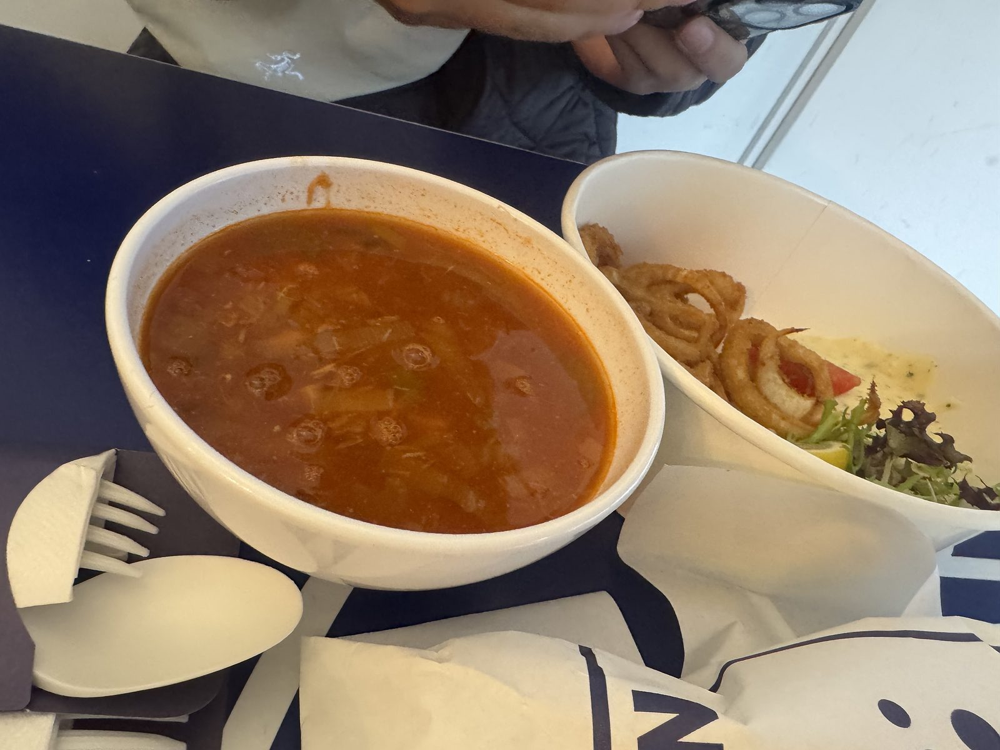
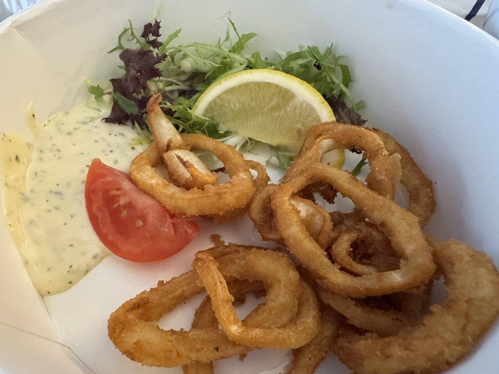
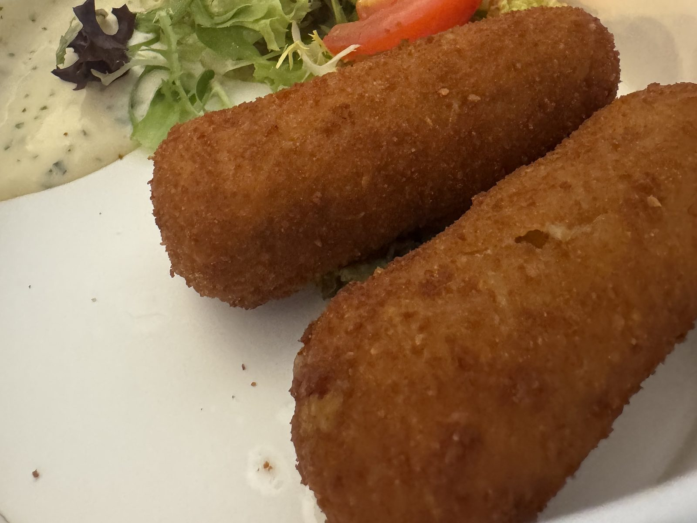
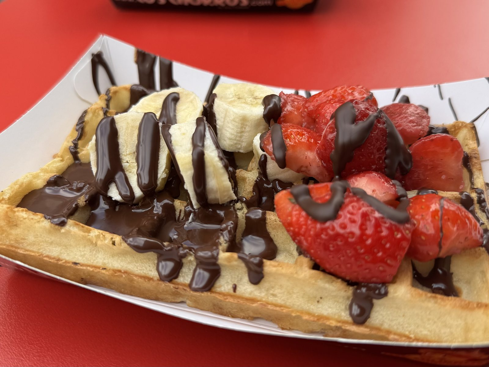
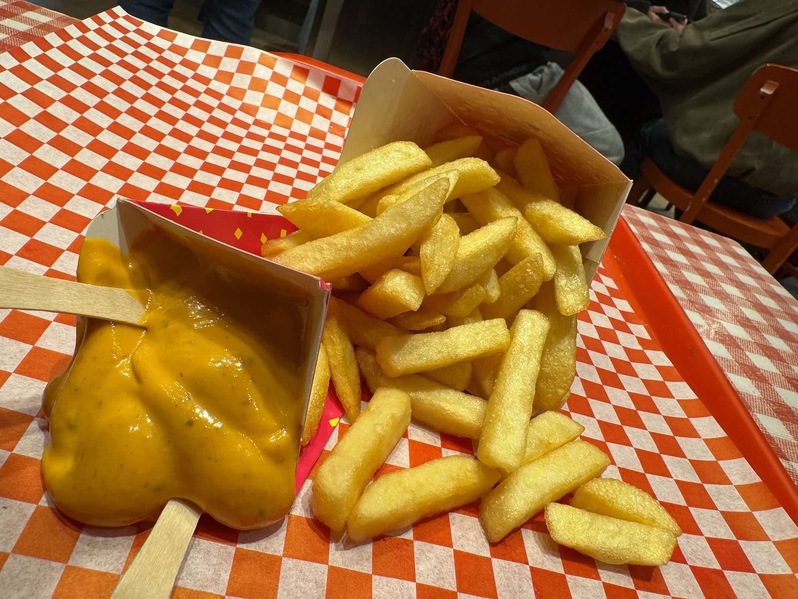
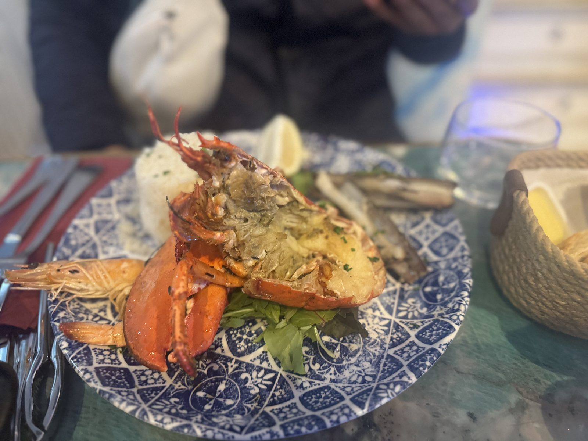
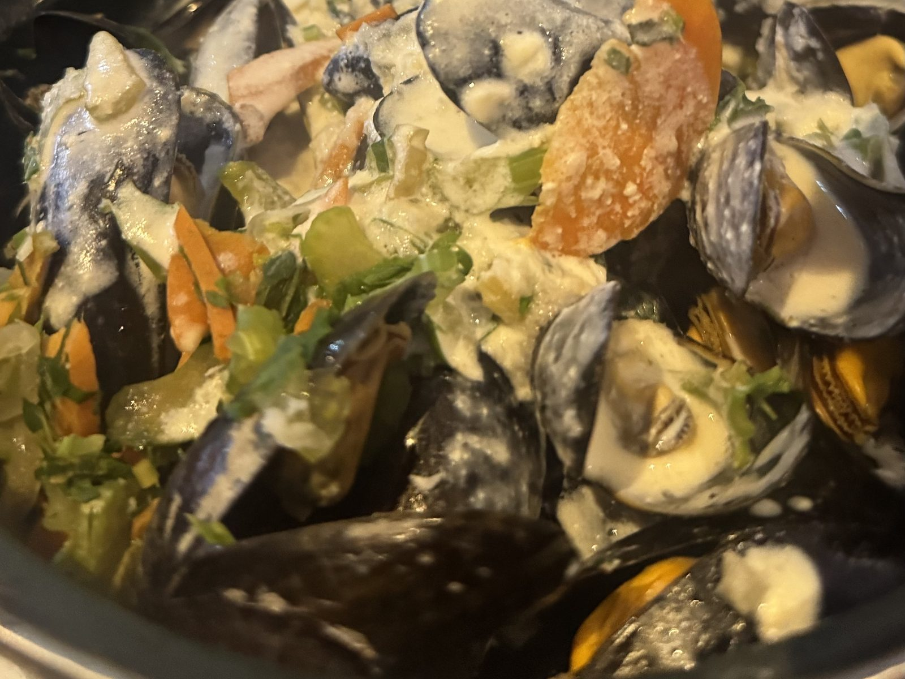
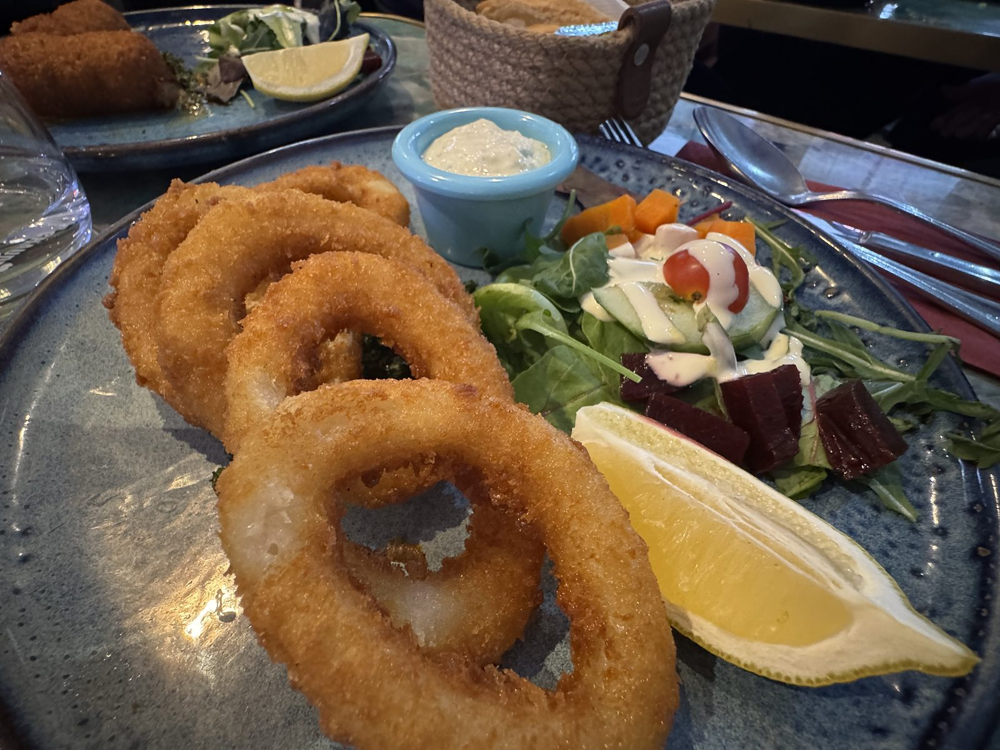
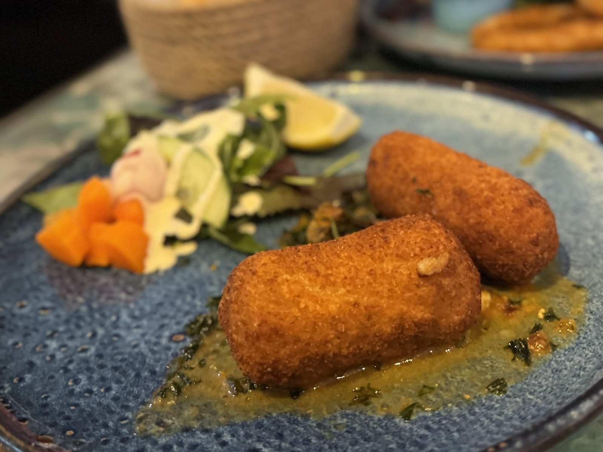
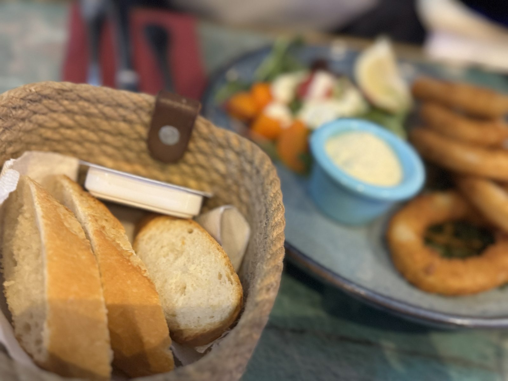

サント＝カトリーヌの魚
10月18日、ブリュッセル。
サント＝カトリーヌの Noordzee（Mer du Nord）は、立ち食いの魚屋です。
器は白い紙。テーブルは紺と白で、紙袋には N の字。
最初に湯気を立てていたのは、トマトの魚スープです。隣の器にはイカリングと、ハーブの入ったタルタル。

イカリングは衣が薄く、金いろに揚がっています。
レモンと、半分に切ったトマトがよく似合います。

エビのクロケットは二本。
厚い衣がこんがりと、まっすぐに並んでいます。

===店舗情報===
店名: Noordzee / Mer du Nord
リンク: 公式サイト
住所: Rue Sainte-Catherine 45, 1000 Bruxelles
赤いテーブルのワッフル
通りに出ると、赤いテーブルのワッフルが待っていました。
バナナといちごの上を、チョコレートが細い線で渡っています。

焼きたての格子に、果物の水分がしみます。
奥にはチュロスの箱。ブリュッセルの午後は、この甘さで一度立ち止まりました。
フリッツとパプリカソース
ブリュッセルのフリッツは、紙のコーンに入ってやってきます。
赤いチェックの紙の上で、黄金色のポテトがこぼれ、黄色いパプリカソースが木のフォークを待っています。

外はかりっと、中はほくほく。
ソースは甘みとスパイスが一緒に来て、一本ごとに味が変わります。
小便小僧の近くで
夜は、小便小僧の近くの海鮮です。
青い絵付けの皿、緑がかった大理石、ロープ編みのパンかご。卓が、すでにごちそうの顔をしていました。
中央に運ばれてきたのはロブスター。
赤い殻、グリルした身。脇にはエビとマテ貝、白いごはんが添えられています。

ムール貝はクリーム仕立て。
にんじんやセロリの甘みがソースに溶けて、貝の塩気をやわらげています。

イカリングは、こちらでも金いろ。
ビーツとレモンのサラダが、揚げたての横で涼しげです。

エビのクロケットは、緑のソースの上に二本。
衣はこんがりと色づき、ソースの青みがよく映えます。

バゲットに添えられたバターは、無塩でした。
クリームのムールと交互に口へ運ぶと、塩気は海のほうに任せられます。

次はデュッセルドルフ
紙の器の魚から、ロブスターの卓まで。
ブリュッセルの一日は、海の味で満ちていました。次は電車で、デュッセルドルフです。
#3 ドイツ編に続く。